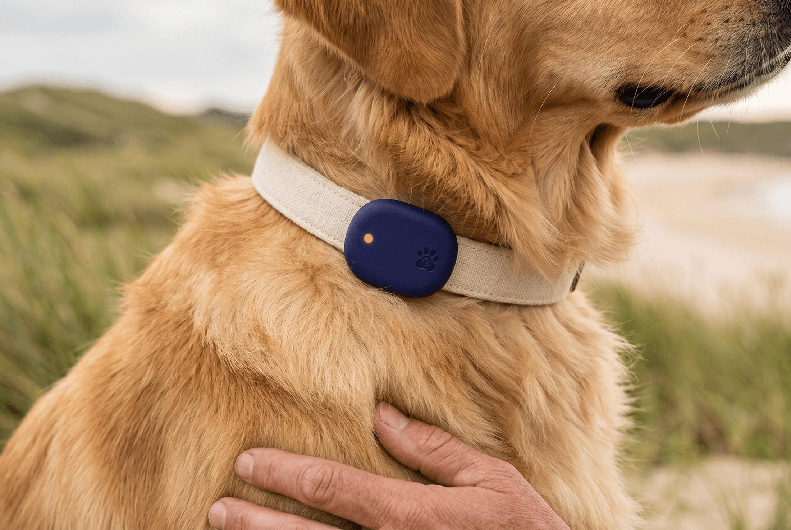
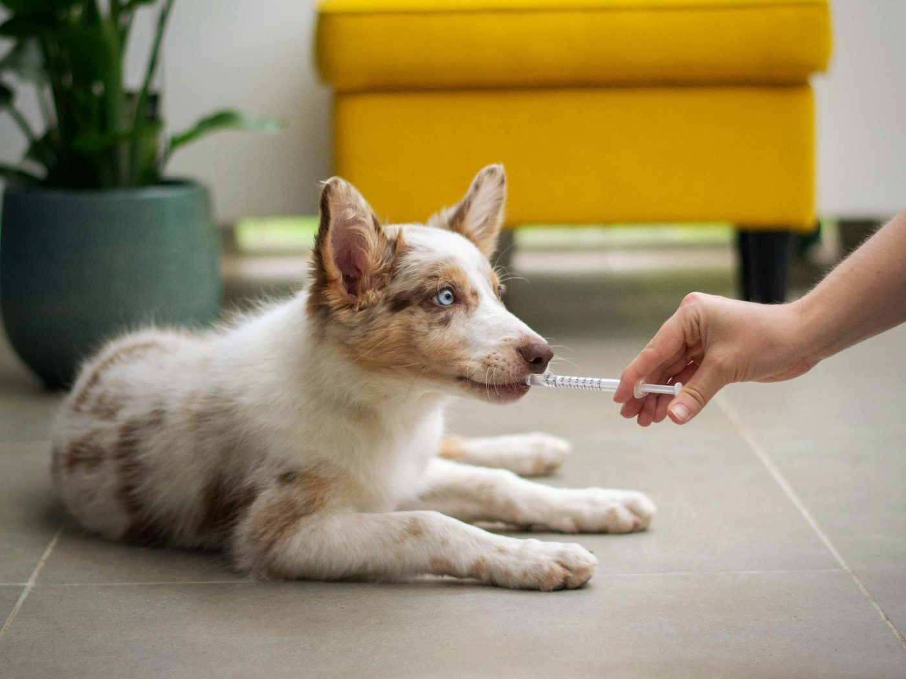
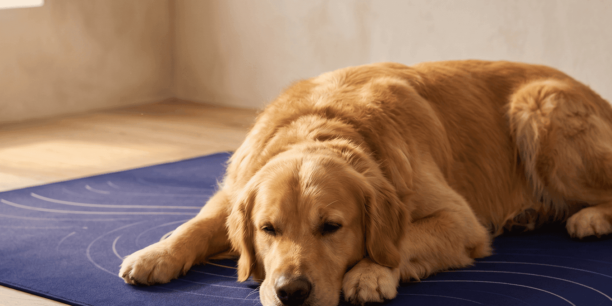
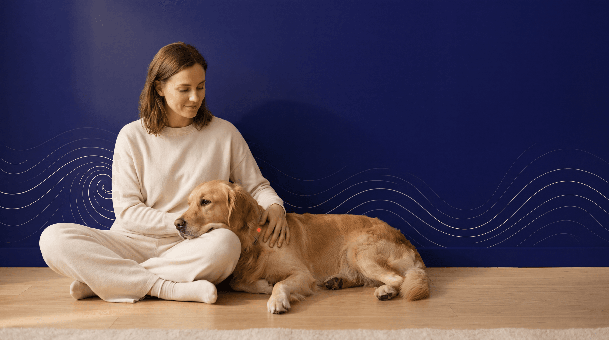

The morning walk
Every walk, counted for you.
The TAG reads activity as it happens. No app to open, no button to press. The walk lands in the day's reading on its own.
emopet is a wellbeing companion for dogs. A worn textile, a rest station and a medallion, read together into one clear picture of the day.

Your dog spends much of the day resting. emopet reads those hours, the active spells and the settled ones, and shows how a day compares with your dog's own rhythm.
Examples from the app
Rest was steadier this week.
A calmer morning than usual.
The evening routine has settled back in.
Hover a day to see the detail.
Designed and made in Brittany, quiet in the home, comfortable to wear.
Day's load
Compared to themselves, across the week.
A preview of the app. The markers sharpen day by day.
The app brings together what the objects observe into a few simple markers, always with the confidence behind each read.
Day to day
It learns your dog's rhythm in a few days, then flags what changes, never what's wrong.
The TAG reads activity as it happens. No app to open, no button to press. The walk lands in the day's reading on its own.

The vet visitWeeks of rest and activity, held against your dog's own baseline. You arrive with facts, not a hunch. emopet reports what it finds, the vet decides.

Settling in at nightYour dog settles on the MAT with nothing to wear. It scores the night's rest while they sleep.
From the morning walk to the last rest of the night.
See the TAG and MATemopet draws on research in animal wellbeing. It describes states that can be observed, from real signals, and leaves you to make sense of them.
The reference is your own dog over time, with their own habits.
emopet shows what your dog does. How they feel is yours to read.
When a signal lacks reliability, emopet would rather say nothing than guess.
PRODUCT PHILOSOPHY
emopet stands beside you. An attentive companion that observes, respects the context, and trusts your bond with your dog above any algorithm.
Our compass
It observes. It contextualises. It shares.
The story you build from there is yours.
In Brittany, a dog is often the first reason neighbours talk to each other. emopet turns that into a local community around dogs' wellbeing, led by Breiz, a Breton companion who knows the coast and its dogs.
The first families are shaping it with us. You decide what you share, and what you keep to yourself.

THE READING
One indicator moves from calm to active, read from the signals the TAG and MAT actually measure. It marks a state, not a mood or an emotion.
Every reading carries its confidence level and sits against your dog's personal, breed-calibrated baseline. emopet reports what it finds, not a diagnosis.
Wellness Quality Index
Rest Score Index
This week
A preview of the app.
A launch price for the first families in Brittany. Prices are confirmed at launch.
The essential
€59
Slips onto your dog's existing collar. The simplest way to start.
On the move
€129
The worn textile, to observe activity and rest, outside and in.
The reference
€249
The rest station, to understand the quality of rest at home.
Season 1 · Lights of Armor
The golden triskele, the sea mist, the double moon. Ornaments for your den. Nothing that changes the reading.
€9.99
At launchFor now, the list reserves your place and your founding price. Pre-order comes later.
emopet observes your dog's behaviour, their activity and their rest. How they feel is yours to read.
A tracker tells you where your dog is or how many steps they took. emopet reads how your dog is doing, their activity and their rest, against their own baseline. It isn't a locator, and it isn't a medical device.
When a signal lacks reliability, emopet shows nothing rather than a guess. You always know how much to trust each read.
Each dog is read against their own baseline, built from breed, age, size and temperament. That baseline sharpens as the days go by.
Yes. Each WQI and RSI links back to the raw signals behind it, with its confidence level. Nothing is a black box, and nothing is a diagnosis.
At home, the MAT is enough: your dog rests on it with nothing to wear. The TAG extends observation outside, whenever you like.
Your data belongs to you. Private, anonymised, or shared with the pack, you choose module by module, you can change your mind at any time, and it is never sold.
emopet is a wellbeing companion. For anything to do with health, your veterinarian is your point of contact, and emopet supports that.
Join now and have your say while the decisions are still open. The app is in closed beta. The TAG and MAT are in prototyping.